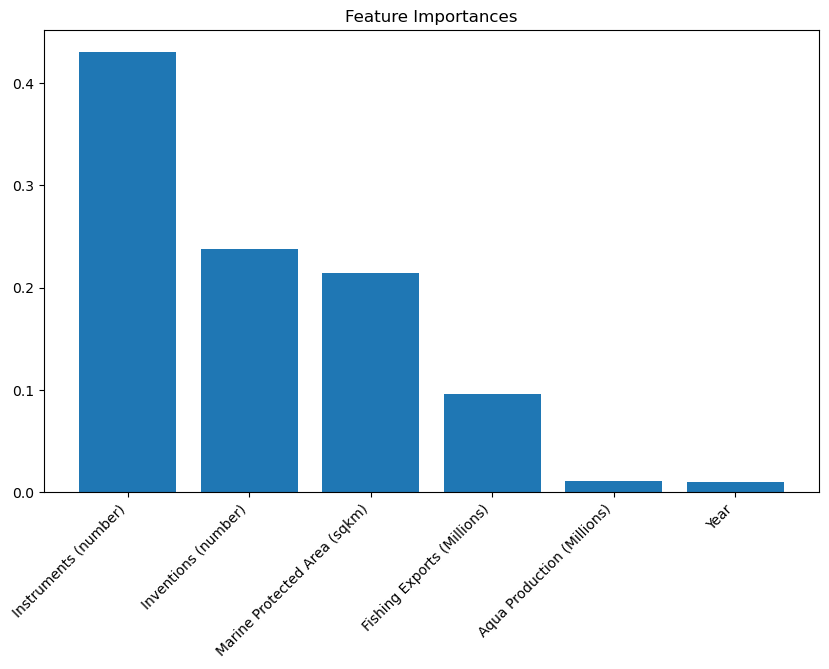

test_results = []train_results = []for num_layer inrange(1, 20): model = DecisionTreeClassifier(max_depth=num_layer) model = model.fit(X_train, y_train) yp_train = model.predict(X_train) yp_test = model.predict(X_test) test_results.append([num_layer, accuracy_score(y_test, yp_test), recall_score(y_test, yp_test, average='weighted')]) train_results.append([num_layer, accuracy_score(y_train, yp_train), recall_score(y_train, yp_train, average='weighted')])plt.plot([column[1] for column in train_results], marker='o', color="skyblue", label="Training")plt.plot([column[1] for column in test_results], marker='o', color="green", label="Test")plt.ylabel("ACCURACY: Training (blue) and Test (red)")plt.xlabel("Number of layers in decision tree (max depth)")plt.legend()plt.tight_layout()plt.show()
def confusion_plot(y_data, y_pred):from sklearn.metrics import confusion_matrix, ConfusionMatrixDisplayfrom sklearn.metrics import accuracy_score, recall_score, precision_score accuracy = accuracy_score(y_data, y_pred)# Assuming Y=0 is the negative class and Y=1 is the positive class n_recall = recall_score(y_data, y_pred, average=None)[0] n_precision = precision_score(y_data, y_pred, average=None)[0] p_recall = recall_score(y_data, y_pred, average=None)[1] p_precision = precision_score(y_data, y_pred, average=None)[1] cm = confusion_matrix(y_data, y_pred) disp = ConfusionMatrixDisplay(confusion_matrix=cm)print("ACCURACY:", accuracy)print("NEGATIVE RECALL (Y=0):", n_recall)print("NEGATIVE PRECISION (Y=0):", n_precision)print("POSITIVE RECALL (Y=1):", p_recall)print("POSITIVE PRECISION (Y=1):", p_precision)print(cm) disp.plot() plt.show()
import pandas as pdfrom sklearn.tree import DecisionTreeRegressorfrom sklearn.model_selection import train_test_split, GridSearchCVfrom sklearn.metrics import mean_squared_errorimport matplotlib.pyplot as pltfrom sklearn.tree import plot_treeimport warningsfrom sklearn.exceptions import FitFailedWarning# ...# Suppress FitFailedWarningwith warnings.catch_warnings(): warnings.filterwarnings("ignore", category=FitFailedWarning)# Load the datasettrees = pd.read_csv("/Users/kendallgilbert/dsan-5000-project-kendallgilbert180/dsan-website/5000-website/data/01-modified-data/nb_record.csv")# Encode 'Country' using label encodinglabel_encoder = LabelEncoder()trees['Country'] = label_encoder.fit_transform(trees['Country'])# Create bins and encode 'Value' into 1, 2, 3, 4, 5y = trees['Value']bin_edges = [0, 18, 36, 54, 72, 87]y_binned = pd.cut(y, bins=bin_edges, labels=False, include_lowest=True)# Add a new column 'Binned_Value' to the DataFrametrees['Binned_Value'] = y_binned +1# X is all features besides 'Value' and 'Country'X = trees.drop(['Value', 'Binned_Value', 'Country'], axis=1)# Target variabley = trees['Value'] # Use 'Value' instead of 'Binned_Value' for regression# Split dataset into training set and test setX_train, X_test, y_train, y_test = train_test_split(X, y, test_size=0.3, random_state=1)# Create Decision Tree regressor objectregressor = DecisionTreeRegressor()# Define hyperparameters to tuneparam_grid = {'max_depth': [3, 5, 7, 10],'min_samples_split': [2, 5, 10],'min_samples_leaf': [1, 2, 4],'max_features': ['auto', 'sqrt', 'log2']}# Create GridSearchCV objectgrid_search = GridSearchCV(regressor, param_grid, cv=5, scoring='neg_mean_squared_error', n_jobs=-1)# Perform Grid Search to find the best hyperparametersgrid_search.fit(X_train, y_train)# Get the best hyperparametersbest_params = grid_search.best_params_print("Best Hyperparameters:", best_params)# Use the best model for predictionsbest_regressor = grid_search.best_estimator_y_pred = best_regressor.predict(X_test)# Model Mean Squared Error (MSE)mse = mean_squared_error(y_test, y_pred)print("Mean Squared Error (MSE) on Test Set:", mse)
Best Hyperparameters: {'max_depth': 7, 'max_features': 'sqrt', 'min_samples_leaf': 2, 'min_samples_split': 5}
Mean Squared Error (MSE) on Test Set: 66.58834387529679
/Users/kendallgilbert/anaconda3/lib/python3.11/site-packages/sklearn/model_selection/_validation.py:425: FitFailedWarning:
180 fits failed out of a total of 540.
The score on these train-test partitions for these parameters will be set to nan.
If these failures are not expected, you can try to debug them by setting error_score='raise'.
Below are more details about the failures:
--------------------------------------------------------------------------------
97 fits failed with the following error:
Traceback (most recent call last):
File "/Users/kendallgilbert/anaconda3/lib/python3.11/site-packages/sklearn/model_selection/_validation.py", line 732, in _fit_and_score
estimator.fit(X_train, y_train, **fit_params)
File "/Users/kendallgilbert/anaconda3/lib/python3.11/site-packages/sklearn/base.py", line 1144, in wrapper
estimator._validate_params()
File "/Users/kendallgilbert/anaconda3/lib/python3.11/site-packages/sklearn/base.py", line 637, in _validate_params
validate_parameter_constraints(
File "/Users/kendallgilbert/anaconda3/lib/python3.11/site-packages/sklearn/utils/_param_validation.py", line 95, in validate_parameter_constraints
raise InvalidParameterError(
sklearn.utils._param_validation.InvalidParameterError: The 'max_features' parameter of DecisionTreeRegressor must be an int in the range [1, inf), a float in the range (0.0, 1.0], a str among {'sqrt', 'log2'} or None. Got 'auto' instead.
--------------------------------------------------------------------------------
83 fits failed with the following error:
Traceback (most recent call last):
File "/Users/kendallgilbert/anaconda3/lib/python3.11/site-packages/sklearn/model_selection/_validation.py", line 732, in _fit_and_score
estimator.fit(X_train, y_train, **fit_params)
File "/Users/kendallgilbert/anaconda3/lib/python3.11/site-packages/sklearn/base.py", line 1144, in wrapper
estimator._validate_params()
File "/Users/kendallgilbert/anaconda3/lib/python3.11/site-packages/sklearn/base.py", line 637, in _validate_params
validate_parameter_constraints(
File "/Users/kendallgilbert/anaconda3/lib/python3.11/site-packages/sklearn/utils/_param_validation.py", line 95, in validate_parameter_constraints
raise InvalidParameterError(
sklearn.utils._param_validation.InvalidParameterError: The 'max_features' parameter of DecisionTreeRegressor must be an int in the range [1, inf), a float in the range (0.0, 1.0], a str among {'log2', 'sqrt'} or None. Got 'auto' instead.
warnings.warn(some_fits_failed_message, FitFailedWarning)
/Users/kendallgilbert/anaconda3/lib/python3.11/site-packages/sklearn/model_selection/_search.py:976: UserWarning: One or more of the test scores are non-finite: [ nan nan nan nan nan
nan nan nan nan -220.97810916
-168.99734951 -214.56504495 -98.31190729 -181.21365182 -150.41487749
-122.08535015 -155.62427801 -167.19953401 -127.40911538 -166.1221751
-110.39162896 -202.95598884 -95.22073016 -144.21490225 -79.23469753
-165.44444684 -180.46373761 nan nan nan
nan nan nan nan nan
nan -64.67150087 -71.65684109 -70.68667524 -108.65757091
-61.84149897 -88.79708269 -73.62956895 -65.35173603 -54.75500724
-114.78669178 -81.83610103 -86.33910444 -114.52793591 -60.56102282
-88.28474195 -72.97019438 -89.28699269 -65.98923489 nan
nan nan nan nan nan
nan nan nan -67.21657794 -84.45549914
-142.3831852 -54.90341981 -42.11139833 -109.39217639 -51.46349204
-57.89671803 -94.08701848 -86.06067406 -47.87331206 -124.7274967
-64.78222219 -111.90860011 -128.15312589 -42.20164939 -103.61173081
-67.19075296 nan nan nan nan
nan nan nan nan nan
-48.01814157 -91.04524301 -42.83576886 -80.6571405 -63.64495593
-92.54381907 -97.71760684 -77.18118922 -122.77866697 -85.79588049
-88.96333113 -71.58700816 -48.84511044 -85.20885901 -114.01689024
-96.48498279 -92.26387576 -82.8356028 ]
warnings.warn(
# Create Decision Tree regressor objectregressor = DecisionTreeRegressor()# Train Decision Tree Regressorregressor.fit(X, y)# Get feature importancesfeature_importances = regressor.feature_importances_# Create a DataFrame for better visualizationimportance_df = pd.DataFrame({'Feature': X.columns, 'Importance': feature_importances})# Sort the DataFrame by importanceimportance_df = importance_df.sort_values(by='Importance', ascending=False)# Visualize feature importancesplt.figure(figsize=(10, 6))plt.bar(importance_df['Feature'], importance_df['Importance'])plt.xticks(rotation=45, ha='right')plt.title('Feature Importances')plt.show()

import pandas as pdfrom sklearn.ensemble import RandomForestRegressorfrom sklearn.model_selection import train_test_splitfrom sklearn.metrics import mean_squared_errorimport matplotlib.pyplot as pltfrom sklearn.tree import plot_tree# Suppress FitFailedWarningwith warnings.catch_warnings(): warnings.filterwarnings("ignore", category=FitFailedWarning)# Load the datasettrees = pd.read_csv("/Users/kendallgilbert/dsan-5000-project-kendallgilbert180/dsan-website/5000-website/data/01-modified-data/nb_record.csv")# Encode 'Country' using label encodinglabel_encoder = LabelEncoder()trees['Country'] = label_encoder.fit_transform(trees['Country'])# Create bins and encode 'Value' into 1, 2, 3, 4, 5y = trees['Value']bin_edges = [0, 18, 36, 54, 72, 87]y_binned = pd.cut(y, bins=bin_edges, labels=False, include_lowest=True)# Add a new column 'Binned_Value' to the DataFrametrees['Binned_Value'] = y_binned +1# X is all features besides 'Value' and 'Country'X = trees.drop(['Value', 'Binned_Value', 'Country'], axis=1)# Target variabley = trees['Value'] # Use 'Value' instead of 'Binned_Value' for regression# Split dataset into training set and test setX_train, X_test, y_train, y_test = train_test_split(X, y, test_size=0.3, random_state=1)# Create Random Forest regressor objectregressor = RandomForestRegressor()# Train Random Forest Regressorregressor.fit(X_train, y_train)# Predict the response for the test datasety_pred = regressor.predict(X_test)# Model Mean Squared Error (MSE)mse = mean_squared_error(y_test, y_pred)print("Mean Squared Error (MSE) on Test Set:", mse)# Visualize one of the decision trees in the Random Forestplt.figure(figsize=(20, 10))plot_tree(regressor.estimators_[0], feature_names=X.columns.tolist(), filled=True, rounded=True)plt.show()
Mean Squared Error (MSE) on Test Set: 58.84053726599997